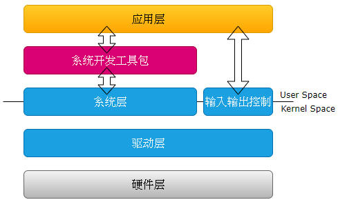

2.2. Design Overview¶
2.2.1. System Architecture¶
Figure2.1 is the MMF system architecture. from bottom to top are:
Hardware layer(HW)
byCVITEK SoConoutsideareagroupitemgroup. outsideareagroupitemincludingFlash, DDR, VideoSensor, AudioADetc..
driver layer(Driver)
Drivers that control the hardware.
system layer(OS)
An operating system based on Linux/AliOS.
InputOutputControl(Ioctl)
Controls components outside the scope of the SDK, For exampleMIPI_RX, MIPI_TX.
systemdevelopmentpacket(SDK)
Hides hardware details and differences and provides a unified API for development.
application layer(Application)
Applications developed by users based on the SDK and ioctl.

Figure 2.1 MMF System Architecture¶
Figure2.2 isMain Internal Processing Flow of the CVITEK Media Processing Platform.
It contains several components;
VI captures video images, performs operations such as cropping and image enhancement, and then passes the image data to VPSS for processing.
VDEC decodes the encoded bitstream and then passes the image data to VPSS for processing.
VPSS receives images from VI or VDEC and can output multiple images with different resolutions simultaneously for preview, encoding, or snapshots.
VO receives images processed by VPSS and outputs them to the display device according to the configured timing.
REGION can overlay a user-specified bitmap on the image data as an OSD.

Figure 2.2 Main Internal Processing Flow of the CVITEK Media Processing Platform¶